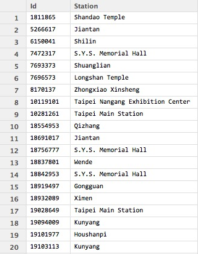
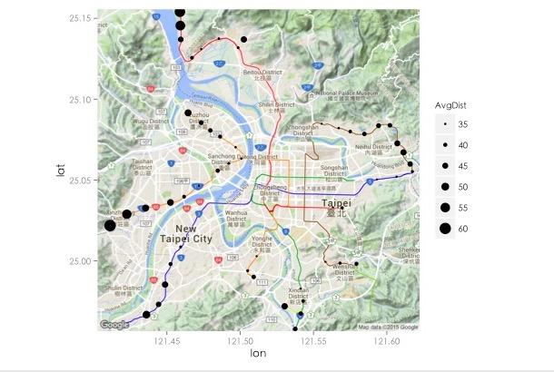
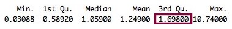
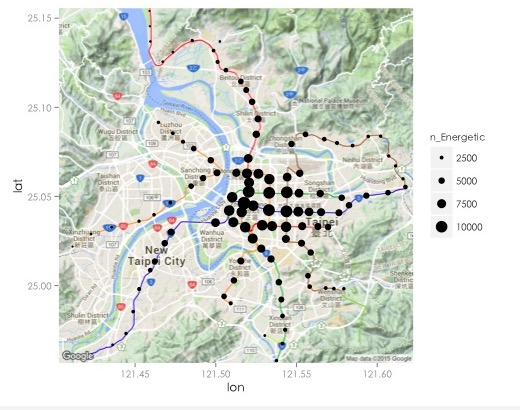
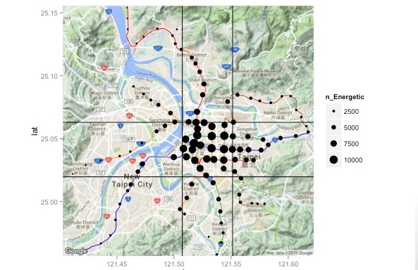
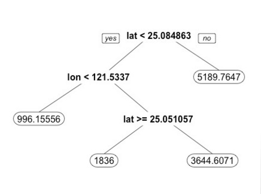

Analysis of Senior Easy Card users behavior
Lawrence Siao
Leverage data from Easy Card to find out the potential demand of senior citizens for excercising
Outline
Sampling Process
Residence Tagging
Moving Range Measurement
Preprocessing
CART Model Building
Sampling Process
Raw Data

Sampling Process
| Season | Week | Duration |
|---|---|---|
| S1 | week 1 | 1/19-1/25 |
| S1 | week 2 | 3/16-3/22 |
| S2 | week 3 | 4/13-4/19 |
| S2 | week 4 | 6/15-6/21 |
| S3 | week 5 | 7/20-7/26 |
| S3 | week 6 | 9/14-9/20 |
| S4 | week 7 | 10/19-10/25 |
| S4 | week 8 | 12/7-12/13 |
*Not include Special Date、Typhoon、National Holiday
* TimeStamp: Out of Station
Residence Tagging
Time Information Extracting
rawData1$hour <- hour(rawData1$Time)
rawData1$year <- year(rawData1$Time)
rawData1$month <- month(rawData1$Time)
rawData1$day <- day(rawData1$Time)
rawData1$weekday <- weekdays(rawData1$Time)
rawData1$date <- format(rawData1$Time, format="%B %d %Y")

Left the lastest record of each user each day
latest_d <- summarise(group_by(rawData1,Id,year,month,day),latest_day= max(Time))

Merge it with raw data to find the station name
latest <- merge(rawData1,latest_d, by.x = c("Id","Time"),by.y = c("Id","latest_day"),
all.y = T)

Where do those users live in?
most_fequent <- function(x){
return(names(sort(table(x),decreasing=TRUE)[1]))
}
latest_f <- aggregate( Station~ Id, latest, most_fequent)

Combined with Google Map
map +geom_point(aes(x=lon, y=lat,size=n_citizen),color="black",data= mrt)+
theme_grey(base_family="STHeiti")

Moving Range Measurement
Moving Range Measurement
The data from website of MRT- Parse them down by a parser

Moving Range Measurement
- The data from website of MRT
Parse them down by a parser

Moving Range Measurement
Combined the parsed data with the raw data
Ex: the user,1625328709, who lives in 古亭. And the total time he/she spend on traveling on 2014/1/19 are sum of traveling time from 古亭 to 台北車站 and from 台北車站 to 古亭, which is 7 + 7 = 14 min

Moving Range Measurement
Result:

Moving Range Measurement
Now we get:
- Where those user live in.
- How long each user spend on MRT.
Preprocessing
Preprocessing
First, we plot those stations with average
map +geom_point(aes(x=lon, y=lat,size=AvgDist),color='black',data= mrt)+
theme_grey(base_family="STHeiti")

Preprocessing
keep those above median
map +geom_point(aes(x=lon, y=lat,size=AvgDist),color='black',data=
mrt[mrt$AvgDist> median(mrt$AvgDist),])+theme_grey(base_family="STHeiti")

Preprocessing
Of course that people live in these areas spend more time on commuting....
map +geom_point(aes(x=lon, y=lat,size=AvgDist),color='black',data=
mrt[mrt$AvgDist> median(mrt$AvgDist),])+theme_grey(base_family="STHeiti")

Preprocessing
We need to find some adjustment variable to adjust the traveling time of different station.

Preprocessing
The Average traveling Time to each other Stations.
For example: 台北車站:16.30435 (min) and 淡水:46.94565 (min)
By dividing this adjusting factor, we could realize the where the real energetic senior citizens lived in.


Preprocessing
Calculate the Benchmark (3rd Qu.)
tmp=0
files <- list.files("~/Desktop/悠遊卡/EasyCard/量化移動範圍_表/")
for(f in files){
tmp1 <- read.csv(paste0("~/Desktop/悠遊卡/EasyCard/量化移動範圍_表/",f),header = T)
ind <- which(mrt$name==strsplit(f,".csv")[[1]])
tmp <- c(tmp,(tmp1$Station[!is.na(tmp1$Station)]/ mrt$adjV[ind]))
}
summary(tmp[-1])

Preprocessing
Calculate number of energetic senior citizens
files <- list.files("~/Desktop/悠遊卡/EasyCard/量化移動範圍_表/")
for(f in files){
tmp <- read.csv(paste0("~/Desktop/悠遊卡/EasyCard/量化移動範圍_表/",f),header = T)
ind <- which(mrt$name==strsplit(f,".csv")[[1]])
mrt$n_Energetic[ind] <- sum((tmp1$Station[!is.na(tmp1$Station)]/ mrt$adjV[ind]) > 1.698)
}
Plot it on GoolgeMap
map +geom_point(aes(x=lon, y=lat,size=n_Energetic),color='black',data=
mrt)+theme_grey(base_family="STHeiti")

Preprocessing
- Try to use predicative model to seperate the whole Taipei City in to different zones with high populated energetic senior citizen
- Choose CART (Classification and Regression Trees), becasue it could capture the non-linear characteristic and is interpretive
Model Building
Model Building
tr.control = trainControl(method = "cv", number = 2)
cp.grid = expand.grid( .cp = (0:15)*0.001)
tr = train(n_energetic ~ lat + lon, data = mrt, method = "rpart",
trControl = tr.control, tuneGrid = cp.grid)
best.tree = tr$finalModel
prp(best.tree, digits = 8)

Model Building
Hot Zone:
p = map + geom_point(aes(x=lon, y=lat,size=n_Energetic), col ='black', data= mrt)
p+geom_vline(xintercept = 121.50728) +geom_hline(yintercept = 25.01963) +
geom_hline(yintercept = 25.062953)+geom_vline(xintercept = 121.55131)

Something is still going wrong
Another preprocessing is Needed

Normalization

Preprocessing Again
tmp=data.frame(Station=0,name="")
files <- list.files("~/Desktop/悠遊卡/EasyCard/量化移動範圍_表/")
for(f in files){
tmp1 <- read.csv(paste0("~/Desktop/悠遊卡/EasyCard/量化移動範圍_表/",f),header = T)
tmp1$name <- strsplit(f,".csv")[[1]]
ind <- which(mrt$name==strsplit(f,".csv")[[1]])
tmp <- rbind(tmp,tmp1[!is.na(tmp1$Station),c("Station","name")])
}
tmp = tmp[-1,]
tmp$Normalized.Dist <- normalize(tmp$Station)
tmp$AdjDist.Normalized <- 0
for(i in unique(as.character(mrt$name))){
tmp[tmp$name==i,"AdjDist.Normalized"] <- tmp[tmp$name==i,"Normalized.Dist"]/mrt$adjV.Normalized[mrt$name==i]
}
summary(tmp$AdjDist.Normalized)

Preprocessing Again
for(i in unique(as.character(mrt$name))){
mrt$n_Energetic.normalized[mrt$name==i] <-
sum(tmp$AdjDist.Normalized[tmp$name==i] > 1.0260)
}
p = map + geom_point(aes(x=lon, y=lat,size=mrt$n_Energetic.normalized),
col =heat.colors(1), data= mrt)

Model Building Again
tr.control = trainControl(method = "cv", number = 2)
cp.grid = expand.grid( .cp = (0:15)*0.001)
tr = train(n_Energetic.normalized ~ lat + lon, data = mrt, method = "rpart",
trControl = tr.control, tuneGrid = cp.grid)
best.tree = tr$finalModel
prp(best.tree, digits = 8)

Model Building Again
p = map + geom_point(aes(x=lon, y=lat,size=mrt$n_Energetic.normalized),
col =heat.colors(1), data= mrt)